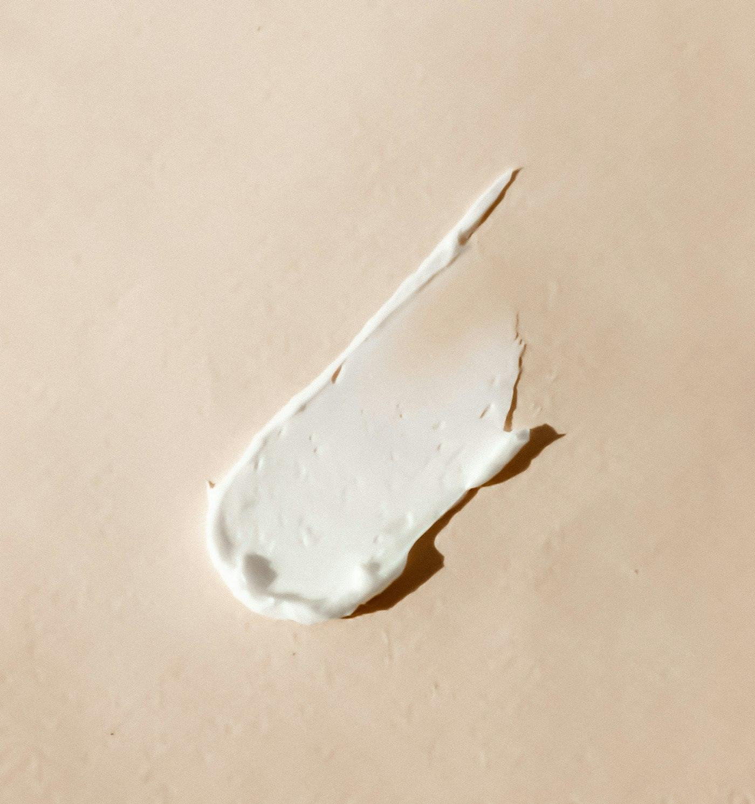
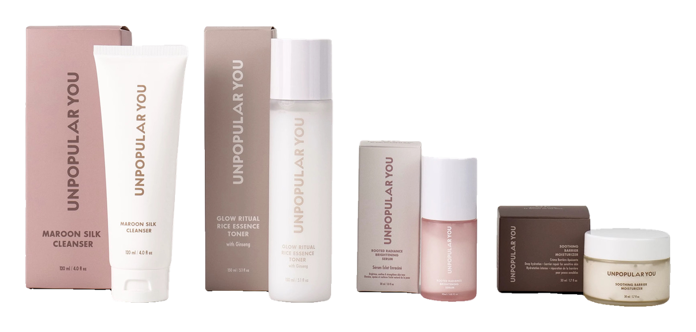
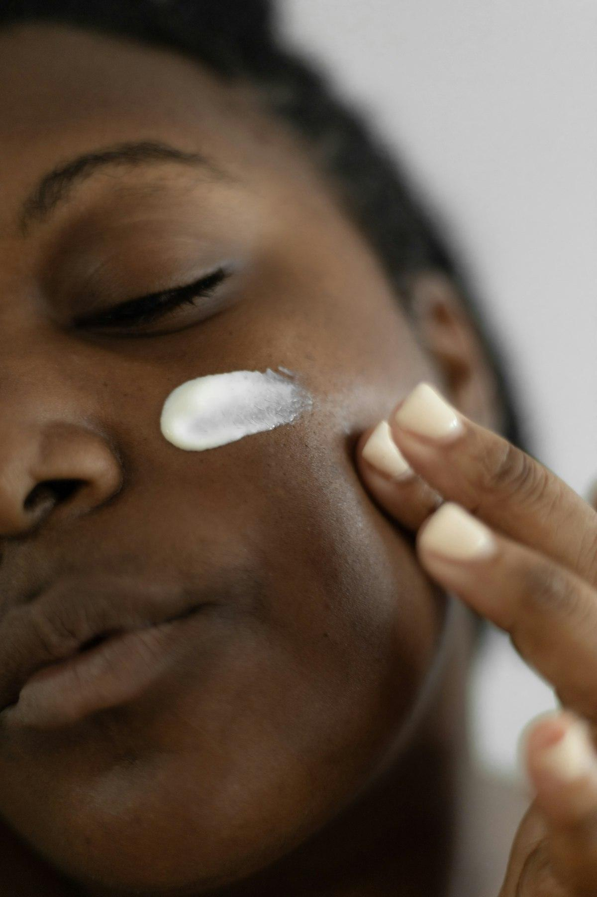

Skincare for melanin-rich skin that glows
Barrier-first skincare that targets the look of dark spots and calms sensitivity — without stripping your skin.
Shop the routine
- Nurse-founded
- Made for melanin-rich skin
- 20,000+ community
“A hydration bath for the most sensitive skin.”Blissim — Glow Ritual Toner, selected for the Glow Up Beauty Box
“A thoughtful, barrier-first routine made for melanin-rich skin.”Glamour — quote to be confirmed
“Jamaican botanicals with a Korean-inspired gentleness.”Vogue — quote to be confirmed
“The nurse-founded brand rethinking skincare for darker skin tones.”Tatler — quote to be confirmed
The formula thinking
Two traditions, one routine
The botanicals Shauna grew up with, made gentle enough for every day. Drag to explore both sides.

Rooted in
Jamaican botanicals
- Soursop leaf
- Moringa leaf
- Guava leaf
- Pumpkin enzyme
Made gentle by
Korean-inspired science
- Rice ferment
- Ginseng
- Triple ceramides
- Peptides
- Niacinamide
A gentle glow
Rice ferment and ginseng soften and brighten the look of skin, without the irritation stronger actives cause.
Built to protect
Triple ceramides, colloidal oatmeal and soursop leaf strengthen your barrier, keeping melanin-rich skin calm and even.
Targeted, not harsh
Tranexamic acid and niacinamide target the look of dark spots while guava leaf and pumpkin enzyme keep it gentle.
The Core Four
Four steps. One order.
Cleanse, prep, correct, seal. Start with one step, or get the full routine.
Get all four for $126 — save $22 and get free shipping.
Shop the Core Four Nurse-designed quiz
Nurse-designed quizNot sure where to start?
Find your first step
4 quick questions, a routine made for your skin. Sign up for our emails to get 20% off your first order.
Inside every layer
Ingredients you can feel

Colloidal oatmealSoothing
Calms the look of redness and relieves dry, tight skin. In the cleanser and moisturizer.
Rice ferment & ginsengKorean-inspired
Softens and brightens the look of skin for a lit-from-within glow. Rice ferment is in the cleanser and toner; ginseng is in the toner.
Soursop & moringa leafJamaican botanicals
Traditional Caribbean leaves that comfort and nourish. In the moisturizer.
Tranexamic acidTargeted
Targets the look of dark spots without irritation, alongside 3% niacinamide. In the serum.
Real skin · real routines
See it in real life
Unfiltered, from our 20,000-strong community. Tap to play — every video links to its product.

Our story
Made by a nurse, for skin like ours
“As a nurse, skin health comes first for me. I wanted products that treat dark spots and sensitivity gently — made for skin like mine, and like yours.”
Melanin-rich skin was either treated with products too harsh to tolerate, or left out of the conversation. After years of acne and acne scars, Shauna made her own.
- Nurse-founded
- Formulated for melanin-rich skin
- Featured in the Blissim Beauty Box
Consumer study
Results you can feel
 Self-reported
Self-reportedsaid hydration lasted up to 48 hours
reported improved skin texture
reported smoother-feeling skin
Consumer perception study. Results self-reported and will vary. Final study details (product tested, number of participants and duration) to be added.
★ 4.9 from verified buyers
In their own words

The Core Four Routine
Everything you need to fade the look of dark spots and strengthen your barrier
- 01CleanseMaroon Silk Cleanser
$30 - 02PrepGlow Ritual Toner
$36 - 03CorrectRooted Radiance Serum
$42 - 04SealBarrier Moisturizer
$40
FAQ
Questions, answered
Anyone with melanin-rich skin who wants results without irritation — especially if you deal with dark spots, uneven tone, sensitivity or an over-treated barrier.
Rooted Radiance targets the look of dark spots with tranexamic acid and 3% niacinamide; the toner adds 2% niacinamide. Everything else keeps your barrier calm, because irritation can trigger more pigmentation. Daily SPF is essential.
Yes — every product is fragrance-free and formulated barrier-first. Patch test before starting anything new.
Fragrance-free and cruelty-free. Vegan status to be confirmed per product.
Most people notice softer, more comfortable skin within the first week. Changes in the look of dark spots take consistent use over several weeks. Results vary.
Start with the Core Four — four steps designed to work together: 01 Cleanse, 02 Prep, 03 Correct, 04 Seal. Or use “Find your first step” above to see where to begin.
Made in the USA. Free US shipping on orders over $60. International shipping details to be confirmed.
Returns policy to be confirmed.


Start today
Your barrier, first.
Four gentle steps for melanin-rich skin that glows. Free US shipping on orders over $60.